基于GitHub搭建个人静态网站
学过网站的朋友都知道，正常情况下如果想要别人访问自己的网站的话，一般就需要买个云服务器 和一个域名，上传自己的网页文件到服务器，通过域名的解析记录，我们可以在地址栏输入自 己的域名，DNS会帮我们解析成该域名绑定的IP地址进行访问服务器的资源，但是如果你购买 的是国内服务器，域名必须得通过备案才能够正常解析到你买的服务器上，大家都知道备案很 花时间，很麻烦的一件事，如果只是简单的静态页面的话就很复杂了，所以我们可以利用 GitHub提供的免费服务器仓库来搭建自己的小型网站，而且域名也不用去进行备案，很方便。 接下来就让我们一起动手制作自己的小网站吧！
我们想用它的资源，首先你得有它的账号吧。如果你没有GitHub账号，那么赶紧去注册一个吧，网址为： https://github.com/ ,注册很傻瓜式，跟一般的普通注册差不多，不过因为GitHub是全英的， 所以可能很多人不怎么明白，不过六级都没过的我都看得懂吧，相信你们不会有问题的，页面 是这么显示的。
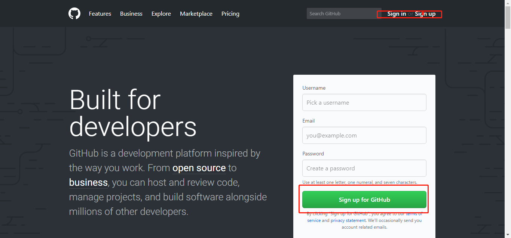然后填写用户名，email，密码就可以注册了。然后就会显示这个页面。
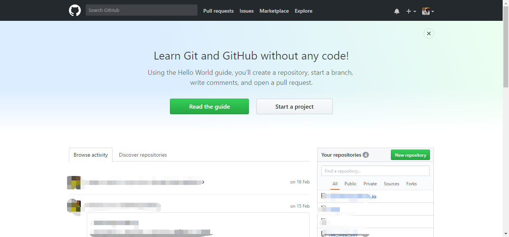然后点击创建仓库（也就是右边的New repository)
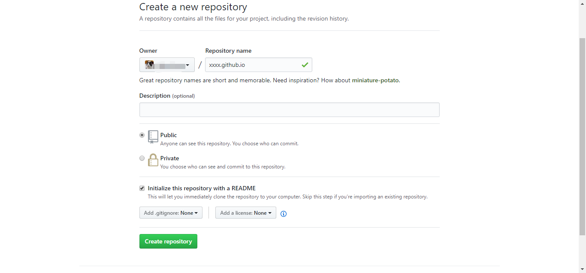简单解释一下，Repository name就是我们要创建的仓库名，这个名字一般情况下只要跟你名下的仓库 不同名即可，但是这里一定要写成xxx.github.io(xxx是你的用户名),因为仓库的唯一性，说明我 们只能创建一个这种类型的仓库。下面的Description是对仓库的描述，接下来的两个选项是公有 仓库和私有仓库，我们都知道GitHub是世界上最大的代码托管中心，没有之一，所以一个程序员 如果不会使用GitHub是说不过去的，虽然中国出了一个中国版GitHub，叫做码云，但是我觉得挺l ow的。因为GitHub的代码是开源的，但是如果你想不让自己的代码让别人看见也是可以的，就是 在这里把仓库设置成私有的，但是得花钱，私有的一般人是看不到，除非你设置了项目的白名单。
下面的最好打钩把，那个是对项目的阅读说明，可以把项目的具体情况以及如何运行啥的写在里面。 然后点击Create repository。
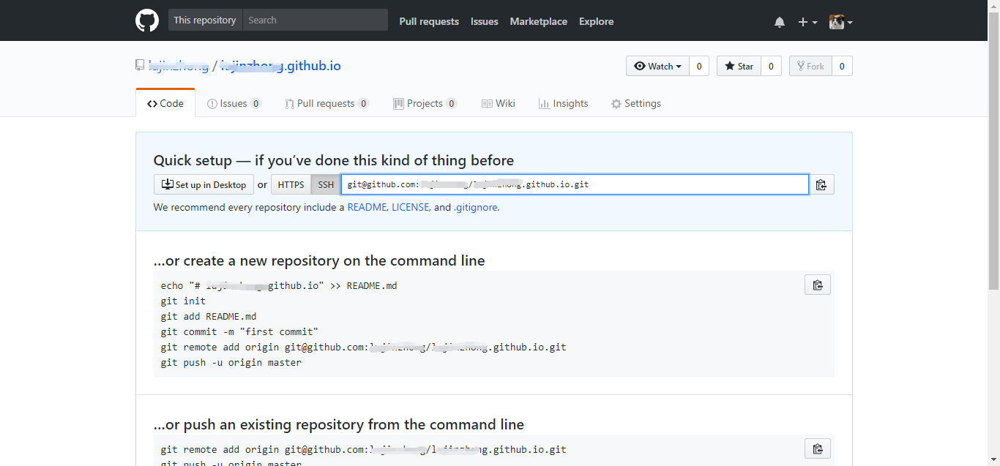这时候如果你没有打钩上面说的，这时候仓库是没有东西的。这时候我们应该给仓库加点东西的。对 于linux操作系统的同学，我们可以使用git命令，不过大多数人估计是Windows系统的，GitHub也 提供了对应的客户端让我们使用，这时候可能习惯写命令的同学就觉得很不屑了，但是我觉得， 不要觉得写命令很酷，实际上我们使用工具是为了增加效率的，使用可视化的客户端可以让我们 更少的出现错误，所以下面我说下如何使用客户端，首先进入下载网址：https://desktop.gith ub.com 进入后显示如下，
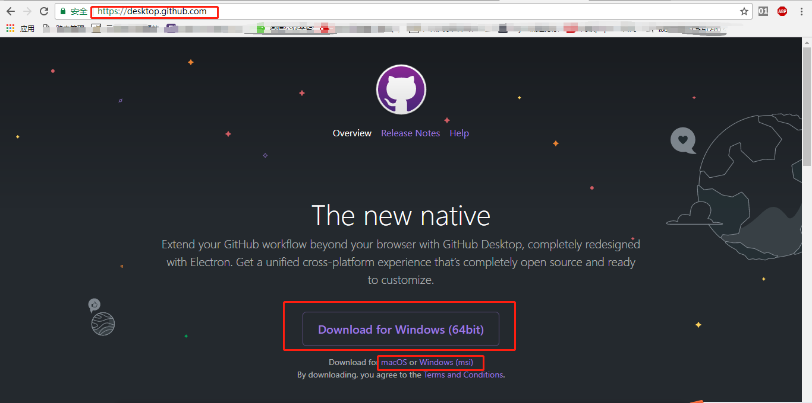然后选择对应系统版本进行下载就好了。下载完是一个可执行文件，双击打开进行安装。安装完后打 开客户端，提示登录，然后你就直接登录吧。这时候在网址上打开你的项目。我们可以关联打开 对应的仓库，或者你直接在客户端找到你的对应的仓库
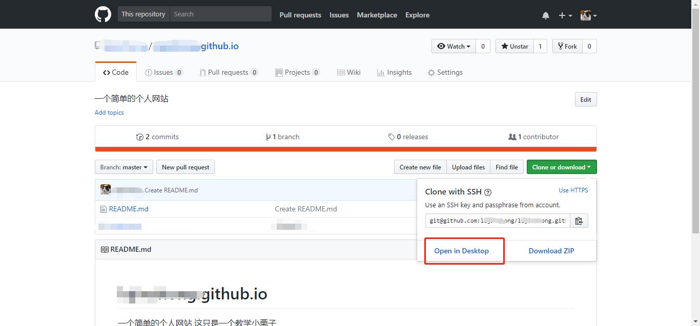 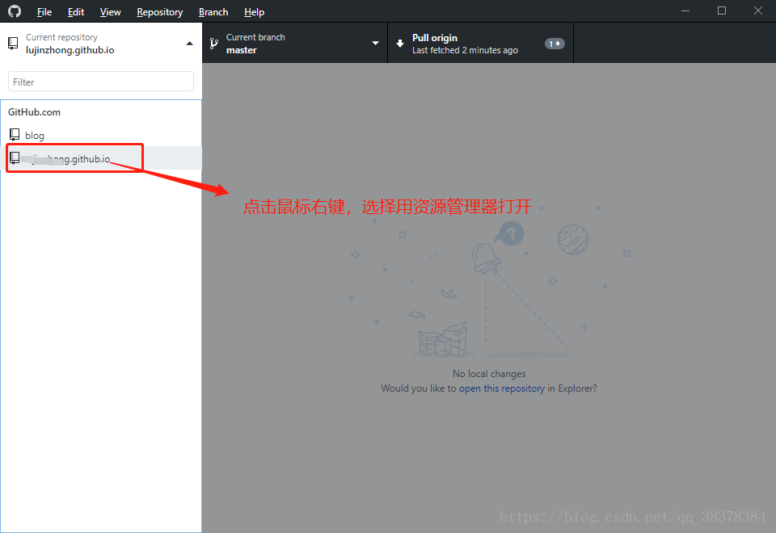打开本地的目录后，添加一个index.html，简单写一些东西。然后保存后，再回到客户端，这时候客 户端自动更新了。然后跟着下面这种图写一下版本解释。点击Commit to master.这时候本地已 经提交了，但是云端还没更新，这时候再点击上面的Publish branch进行云端的更新。其实就是 合并分支形成一个新版本。
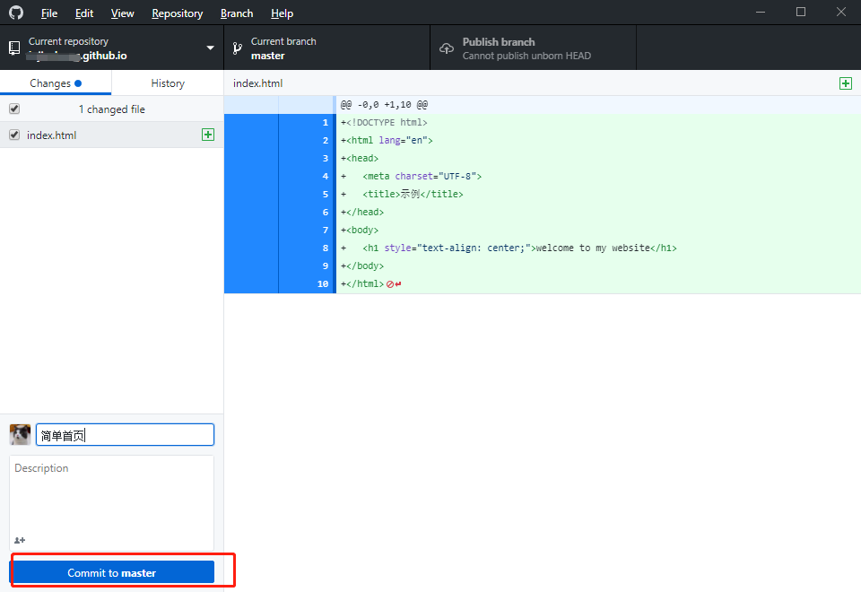这时候打开网站，更新一下就可以看到仓库已经有这个文件了。
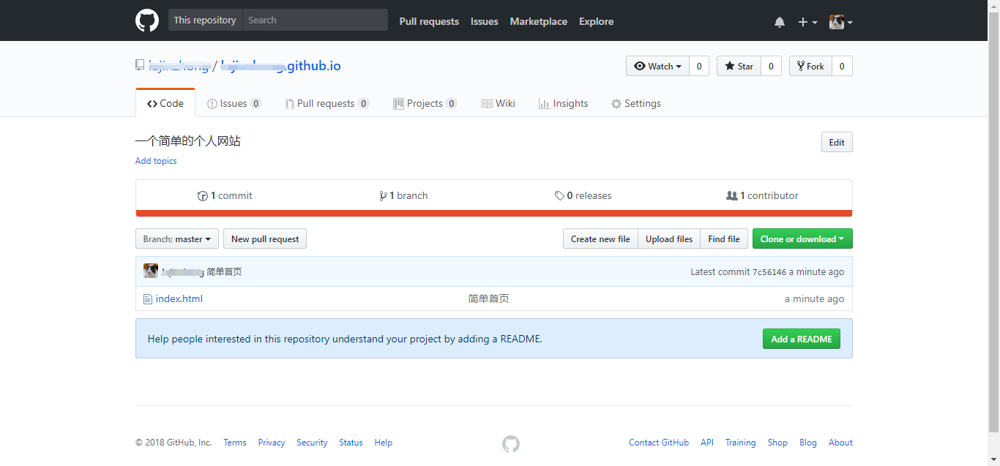然后我们这时候就可以利用GitHub的二级域名进行访问了，例如地址栏输入http://xxx.github.io
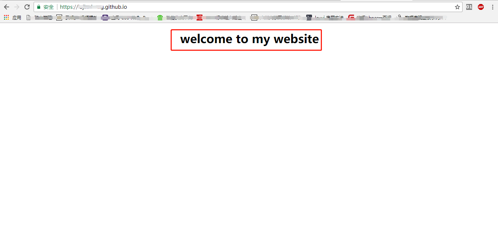这时候已经可以正常访问了，但是如果你想要自己购买的域名进行访问的话，还要这么做，得先获取 这个二级域名的ip地址，于是我们来ping一下：
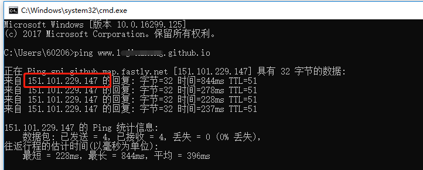找到这个ip地址就好办了，然后我们这时候需要购买一个域名了，便宜点几块钱而已。可以去各种平 台进行购买，例如腾讯云或者阿里云。例如我是在腾讯云购买的域名，这时候就可以进行添加解析了。
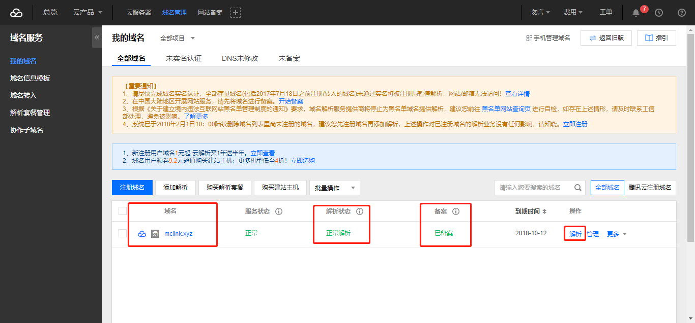点击解析后：
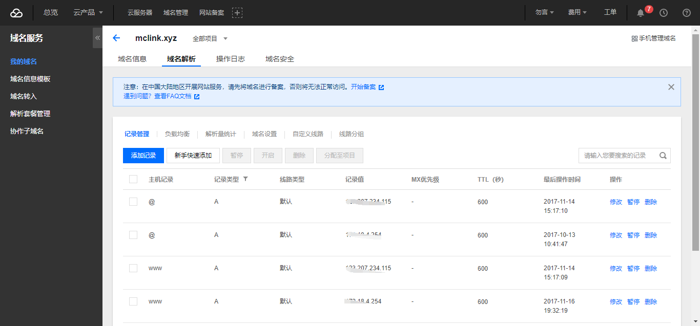可以看到我以前已经添加过一些解析了，如果你是刚买的域名。是没有添加记录的。这时候我们点击添 加记录或者新手快速添加，
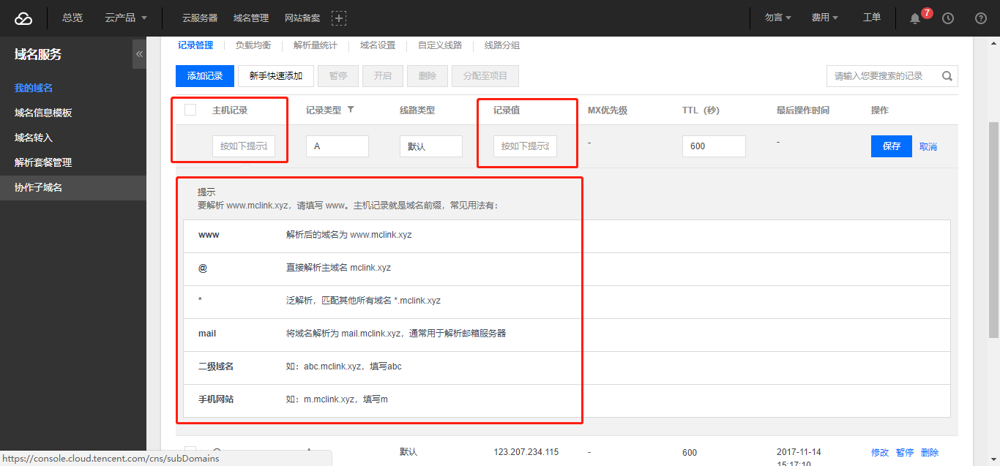简单说明一下，主机记录就是下方的框框的东西，我们只要两条记录就好了，一个是www，另一个是@, 记录类型都选A，记录值就是上面我们ping到的ip地址。
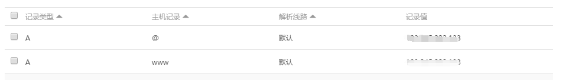这样就解析完成了，例如你买的域名是aaa.com，那么地址http://www.aaa.com和http://aaa.com都可以 正常访问。很简单吧。对于不想花钱买服务器的也不想备案的同学这个就很好用啦。而且GitHub里 面还提供了主题给我们当模板使用，因此我们可以自由设计自己喜欢的网页。
"以上就是使用GitHub搭建自己的网站的大致过程了，如果您在 搭建中有什么疑惑可以联系我.